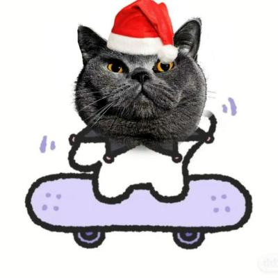

MAII
半个月亮和三便士。
MAII是谁？
MAII是一名“泛物理”专业的大学本科生。
MAII干什么？
MAII最大的兴趣爱好的游戏开发，尤其是游戏开发中的渲染工作，因此对计算机图形学很感兴趣。另外，因为专业原因对数学和物理略有了解。
“麻衣”？
“MAII”的中文是“麻衣”，但是无论是来源还是意义都和某个学姐没有关系。“麻衣”来源于“麻一”。
“半个月亮和三便士”？
来自“月亮与六便士”，月亮代表理想，六便士代表现实。而MAII总是追求二者之间的平衡。
圣诞帽黑猫？
圣诞帽黑猫是MAII最常用的头像，是MAII的标志之一。但这并不意味着MAII比起狗更喜欢猫，事实上MAII更喜欢狗。猫的选用是MAII对自身性格的写照。